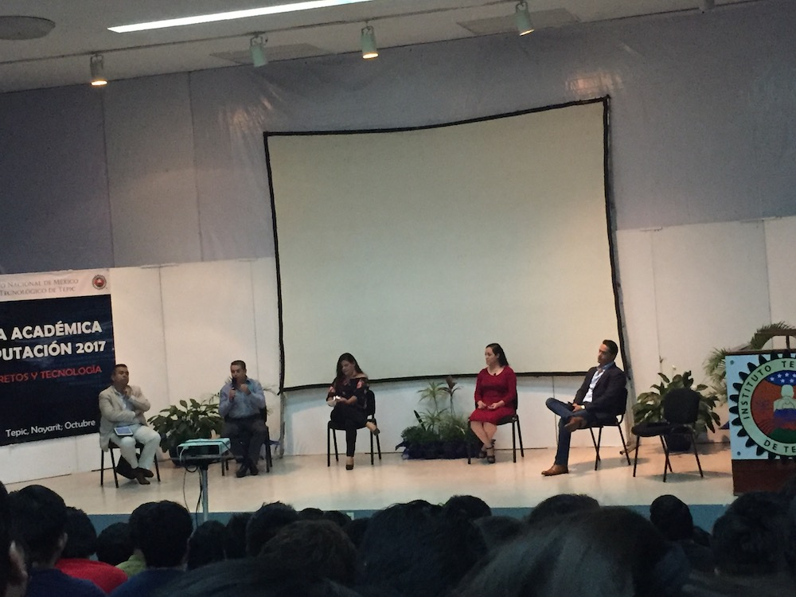

El panel de emprendedores ¡Orgullo Tigre! Estuvo a cargo de la Mtra. Verónica Ramírez Jáuregui quien fungio como el papel de moderadora, estuvieron presentes ex alumnos egresados del Instituto Tecnológico de Tepic y que hoy cuentan con su propia empresa, tales como la Ing. Obdulia, el Ing. Gerardo, Ing. Juan Manuel, y el Ing. Nicolás, afirmaron haber sido la primer generación egresada de la carrera Ingeniería en Sistemas Computacionales, el tema principal fue el emprendimiento, para lo cual estas fueron algunas de las preguntas realizadas:
- ¿Cuáles son las reglas para ser un emprendedor exitoso?
Ing. Gerardo: Menciona que no hay una serie de reglas para poder ser un emprendedor, dice que lo importante es guiarte por lo que a ti te gusta y te hace feliz.
Ing. Francisco: Menciona que depende del cliente.
- ¿Qué tan importante es un segundo idioma?
Ing. Obdulia: Es primordial para lo que se vive en la actualidad, existe una mejor interacción por lo que se considera un mundo más exigente.
Ing. Nicolás: Dependerá de la idea y el mercado en el que te interese. Considera el inglés un idioma líder y es en USA, India y China los más grandes negocios hablantes de este idioma.
- ¿Qué es lo más importante?, ¿Emprender o emplearse?

Ing. Juan Manuel: Considera que debería emprender desde egresado por las ideas que se tienen, en caso de fracasar considera buscar emplearse, pero solo por un tiempo y después volver a intentar levantarse como emprendedor.
Ing. Gerardo: Lo considera que la experiencia laboral lo impulso a querer emprender. Inicio en los alimentos y de ahí partió para hacer negocios.
- ¿Qué tan difícil fue para usted ser empresario?
Ing. Obdulia: Si fue difícil, es algo en lo que te encuentras con tropiezos y obstáculos, pero es necesario no rendirse e ir buscando tu objetivo. “Es preocupante pero emocionante”, enfocarte en tu pasión y lograrlo.
Ing. Nicolás: Lo considera algo muy complicado, y dependerá de la manera de pensar de cada uno.
- ¿Crees que existe oportunidad de emprendimiento en Nayarit para las carreras de ISC e ITIC´s?
Ing. Juan Manuel: Considera que no es obstáculo la carrera para poder emprender un negocio, y dice no ser necesario el emprender con un negocio exclusivamente del área en que te desenvuelves.